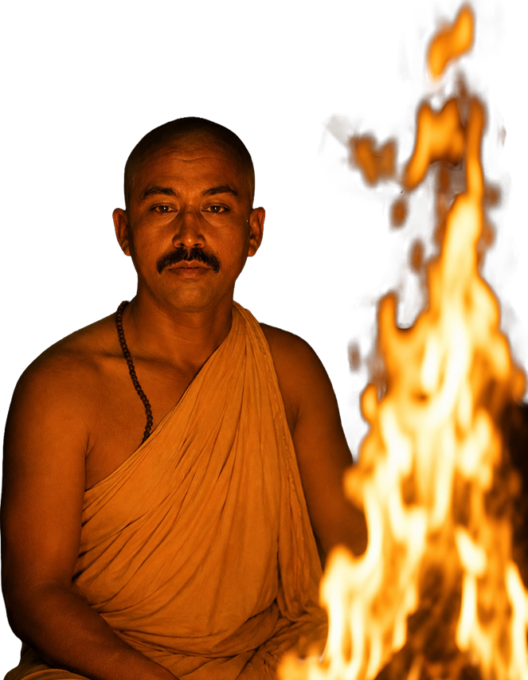

काली कुलम :
आदि शक्ति की उस अखंड ऊर्जा से जन्मी संस्था, जो करुणा को शक्ति मानती है और सेवा को साधना।
यहाँ
धर्म केवल अनुष्ठान नहीं, जीवन जीने की कला है। मानवता के भीतर प्रसुप्त शक्ति को जगाना और समाज
में
प्रकाश फैलाना - यही इस कुल का संकल्प है।
'काली' अर्थात् स्त्री - आदि, अनंत, सर्वशक्तिमान।
'कुलम' अर्थात् घराना - एक जीवंत परंपरा, एक पवित्र परिवार।
काली कुलम - स्त्री शक्ति का कुल।
इस संस्था की नींव दो अटल स्तंभों पर खड़ी है -

"गृहस्थो नास्ति मे तुल्यः" गृहस्थ के समान कोई नहीं।
माँ शारदा के उपासक, पंचभूतों के साधक - गुरुदेव मांगीलाल भील गृहस्थ हैं, पर संसार से परे हैं।
मोरड़ी मावली की भूमि पर जल, जंगल और जमीन उनकी साधना के साक्षी हैं। पृथ्वी, जल, अग्नि, वायु, आकाश - इन पाँच तत्वों को वे जानते नहीं, जीते हैं। प्रकृति का संरक्षण उनके लिए कोई उद्देश्य नहीं, उनका स्वभाव है। रसोई हो या पूजा स्थल, खेत हो या ध्यान - गुरुदेव के लिए कोई भेद नहीं। जो संसार में रहकर साधना करे, वही सच्चा साधक है।
द्राविडाचार्य उनके प्रिय शिष्य हैं - जिन्होंने गुरु की शक्ति को संस्था का रूप दिया।


"विद्या ददाति विनयं विनयाद् याति पात्रताम्"
पूज्य गुरुदेव के सानिध्य में जो साधना की, वही साधना आज काली कुलम का स्वरूप हैं ।
30 वर्षों से माँ त्रिपुर सुंदरी की उपासना में लीन, गृहस्थ जीवन में रहते हुए साधना की उच्चतम अवस्था को जीने वाले द्राविडाचार्य केवल एक साधक नहीं - एक सम्पूर्ण विद्यापीठ हैं।
रुद्राक्ष विद्या में पीएचडी, दस महाविद्याओं के ज्ञाता और यंत्र निर्माण में श्रेष्ठ। कोकशास्त्र, कामशास्त्र, वास्तु, ज्योतिष, रसायन और भौतिक शास्त्र - इन समस्त विद्याओं के गहन अध्येता। वे जीवन को खंडों में नहीं, समग्रता में देखते हैं।

2025 - काली कुलम की स्थापनाएक संकल्प, एक परंपरा, एक परिवार।
हम उस समाज की कल्पना करते हैं जहाँ हर व्यक्ति मानसिक, आध्यात्मिक और सामाजिक रूप से सशक्त हो। काली कुलम वह आँगन है जहाँ जाति, पंथ और भेद की कोई दीवार नहीं - केवल प्रेम है, भक्ति है, और निःस्वार्थ सेवा का भाव है।
साधकों को प्राचीन तंत्र-मंत्र और ध्यान की गहन शिक्षा देकर उन्हें आत्म-सम्मान और आत्म-बोध के मार्ग पर अग्रसर करना।
माँ काली की शक्ति के प्रतीक स्वरूप - प्रत्येक स्त्री को स्वावलंबी, साहसी और आत्मविश्वासी बनाना । क्योंकि जब स्त्री जागती है, तो कुल जागता है।
दीन-दुखियों की सहायता, शिक्षा का प्रसार और स्वास्थ्य सेवाओं के माध्यम से माँ काली के दिखाये मार्ग पर चलते हुए जन-जन तक पहुँचना।
सनातन परंपराओं, वैदिक ज्ञान और भारतीय संस्कृति की उस अमूल्य धरोहर को नई पीढ़ी तक पहुँचाना जो सदियों से हमारी पहचान रही है।